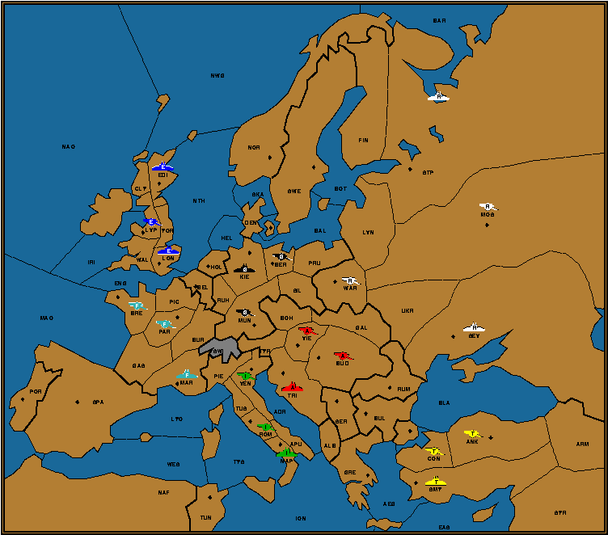

The Initial Placement of Pieces in the Sultan's Puzzle

... The amazing fact is that exact initial placement of all 22 units
is determinable from the information given! ...
Back to the puzzle....
 Back to the puzzle....
Back to the puzzle....